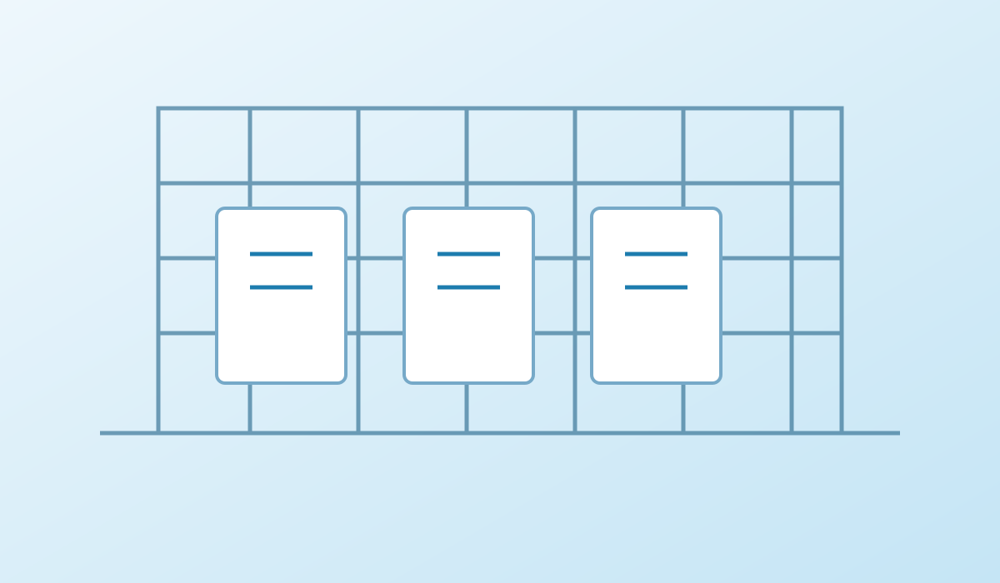

Contamination Control Strategy (CCS) support
Contamination Control Strategy (CCS) support.
Support contamination-control thinking across sterile facilities, processes and critical utilities.

Support is tailored to your site, system, product context, risk profile and internal quality procedures.
Support contamination-control thinking across sterile facilities, processes and critical utilities. Our work emphasises clear scope, traceability, documented rationale, and practical action closure. Activities are agreed to match the maturity and needs of each organisation.
Possible deliverables can include assessment summaries, review comments, requirement-to-evidence matrices, action trackers, draft documents, training material and readiness reports, subject to the agreed scope and client approval.
Contamination Control Strategy (CCS) support.
EU GMP Annex 1 readiness.
cleanroom and HVAC qualification.
aseptic process simulation documentation support.
sterilization and depyrogenation system readiness.
environmental monitoring programme review.
cleanroom zoning and personnel/material flow review.
sterile utility assessment and action tracking..
We focus on understanding intended use and risk, defining the evidence required, reviewing gaps and supporting traceable closure. The approach is collaborative and aligned with client procedures and applicable requirements.
Tell us your context and what outcome you need to achieve.
Aligned with GxP, FDA 21 CFR Part 11, EU GMP Annex 11 & 15, ICH Q9(R1) methodologies and the ISO 9001:2015 Quality Management System.